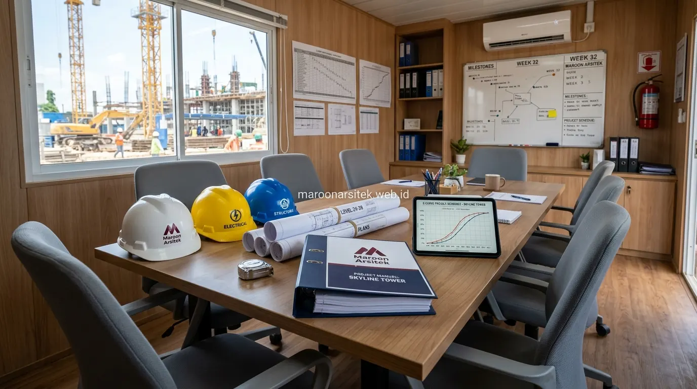

Proyek pembangunan gedung bertingkat memiliki tingkat kompleksitas yang jauh lebih tinggi dibanding rumah tinggal, baik dari sisi rekayasa struktur beban, kepatuhan perizinan daerah, hingga manajemen ratusan tenaga kerja di lapangan. Kesalahan dalam memilih mitra pelaksana berisiko menimbulkan kerugian finansial yang masif, keterlambatan operasional bisnis, hingga potensi sengketa hukum. Menggunakan layanan jasa kontraktor bangunan terpercaya dari Maroon Arsitek memberikan kepastian eksekusi teknis yang presisi, berlegalitas hukum resmi, dan berstandar K3 tinggi.
Verifikasi Izin Usaha dan Legalitas Kontraktor Gedung
Langkah pertama dan paling mendasar dalam menunjuk kontraktor gedung adalah memastikan kelengkapan izin usaha jasa konstruksi dan sertifikasi badan usaha yang masih aktif:
- Nomor Induk Berusaha (NIB) Berbasis Risiko: Memastikan perusahaan terdaftar secara sah pada sistem OSS pemerintah dengan Klasifikasi Baku Lapangan Usaha Indonesia (KBLI) jasa konstruksi gedung.
- Sertifikat Badan Usaha (SBU) Jasa Pelaksana Konstruksi: Memiliki klasifikasi kualifikasi yang sesuai dengan batasan nilai proyek dan ketinggian lantai gedung yang akan dibangun.
- Asuransi Konstruksi (Contractor All Risks / CAR): Melindungi proyek dari risiko kerusakan tak terduga, bencana alam, serta perlindungan pihak ketiga selama masa konstruksi berlangsung.
Kelengkapan dokumen ini menjadi dasar keabsahan kontrak kerja, terutama bagi pemilik bisnis dan korporasi yang membutuhkan pertanggungjawaban hukum yang jelas atas setiap rupiah investasi properti yang dikeluarkan.
Kualifikasi Tenaga Ahli dan Struktur Tim Proyek
Kepastian kompetensi di lapangan diwujudkan melalui susunan tenaga ahli bersertifikat yang diterjunkan secara penuh (*full-time*) di lokasi proyek gedung:
- Project Manager (PM): Mengontrol alokasi anggaran, hubungan dengan stakeholder, dan kepatuhan timeline proyek secara makro.
- Site Engineer Struktur & Arsitektur: Memastikan metode pembesian, pengecoran balok bentang panjang, dan pemasangan curtain wall fasad presisi sesuai gambar teknis DED.
- MEP Engineer: Mengatur integrasi genset, panel daya listrik 3-phase, jalur pipa hidran pemadam kebakaran (*fire protection*), lift penumpang, dan sistem tata udara sentral (VRV/Chiller).

Kapasitas Manajemen Proyek untuk Bangunan Bertingkat
Kapasitas manajemen proyek menjadi tolok ukur utama kesuksesan konstruksi bertingkat, mencakup perencanaan jadwal yang realistis, logistik material yang cepat, dan sistem kontrol mutu bertahap (*Quality Assurance*):
- Penyusunan Kurva S & Metode Critical Path Method (CPM): Memetakan urutan pekerjaan kritis (seperti pekerjaan pondasi tiang pancang/bore pile dan struktur basement) agar tidak terjadi jeda waktu yang memicu keterlambatan berantai.
- Uji Mutu Laboratorium Beton & Baja: Melakukan pengujian kuat tekan silinder beton bertulang (K-350 / fc 30 MPa) dan sertifikat uji tarik baja tulangan sebelum pengecoran plat lantai dilakukan.
- Logistik & Akses Alat Berat: Pengaturan jadwal operasional mobilisasi tower crane, concrete pump, dan armada truk mixer di tengah kepadatan lalu lintas kota Jakarta.
Standar Keselamatan Kerja (K3) di Lokasi Proyek Konstruksi
Keamanan operasional proyek dijawab melalui penerapan Sistem Manajemen Keselamatan dan Kesehatan Kerja (SMK3) yang ketat di seluruh area konstruksi gedung:
- Penyediaan Alat Pelindung Diri (APD) lengkap seperti helm proyek bersertifikasi, rompi reflektor, sepatu safety, dan full body harness untuk pekerja di ketinggian.
- Pemasangan jaring pengaman (*safety net*) di sekeliling lantai terluar untuk mencegah jatuhnya material atau peralatan ke area publik di bawahnya.
- Pelaksanaan *Safety Induction* harian (*toolbox meeting*) sebelum memulai shift kerja guna mengingatkan SOP keselamatan.
Transparansi Kontrak dan Sistem Pembayaran Bertahap
Transparansi kontrak kerja melindungi kepentingan finansial klien melalui klausul yang jelas dan berkeadilan:
- Surat Perjanjian Kerja (SPK) Rinci: Memuat spesifikasi merek material secara eksplisit, metode pengujian, masa pelaksanaan, dan sanksi keterlambatan (*denda liquidated damages*).
- Pembayaran Berbasis Monthly Progress Certificate: Dana dicairkan berdasarkan persentase capaian fisik nyata yang diverifikasi bersama oleh tim konsultan pengawas dan klien.
- Retensi Pemeliharaan: Pemotongan 5% nilai kontrak yang ditahan hingga masa pemeliharaan selesai (umumnya 3–6 bulan) untuk menjamin perbaikan cacat mutu konstruksi.
Mekanisme Penanganan Perubahan Lingkup Pekerjaan (Change Order)
Fleksibilitas kebutuhan bisnis klien yang menginginkan penyesuaian fungsi ruangan diakomodasi melalui prosedur *Change Order* resmi:
- Evaluasi bersama mengenai kelayakan teknis dan dampak perubahan pada jalur MEP serta kapasitas struktur.
- Perhitungan estimasi biaya tambah/kurang (*variation cost*) dan penyesuaian jadwal penyelesaian.
- Penandatanganan Berita Acara Perubahan Kerja (Adendum SPK) sebelum pelaksanaan fisik di lapangan dimulai.